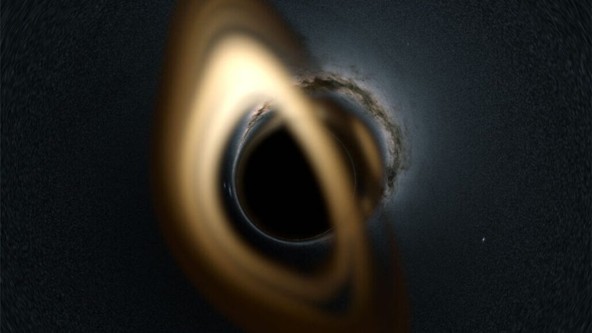
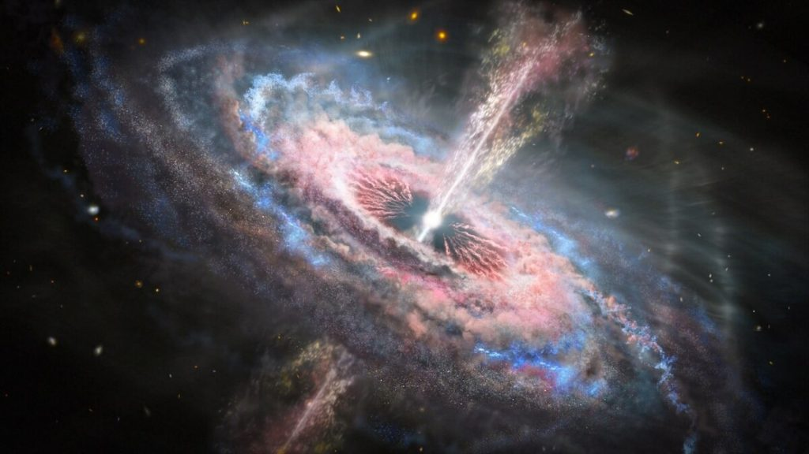
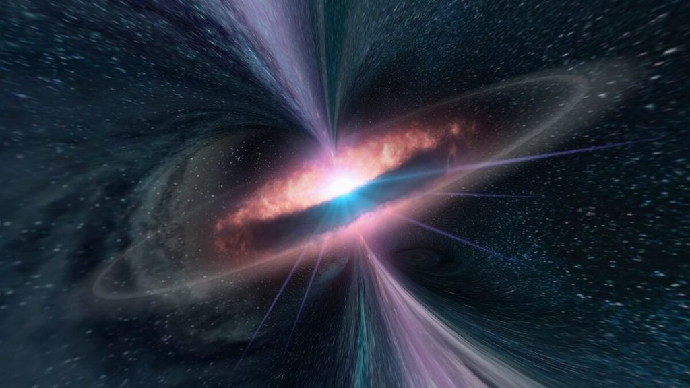
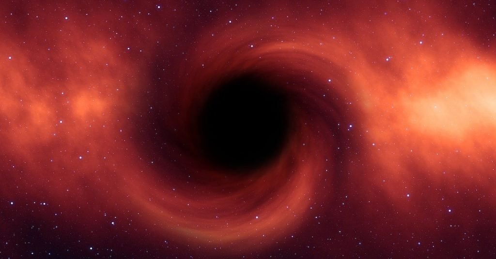
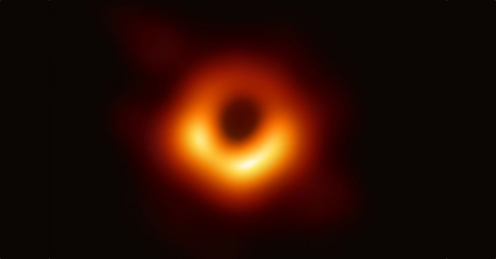
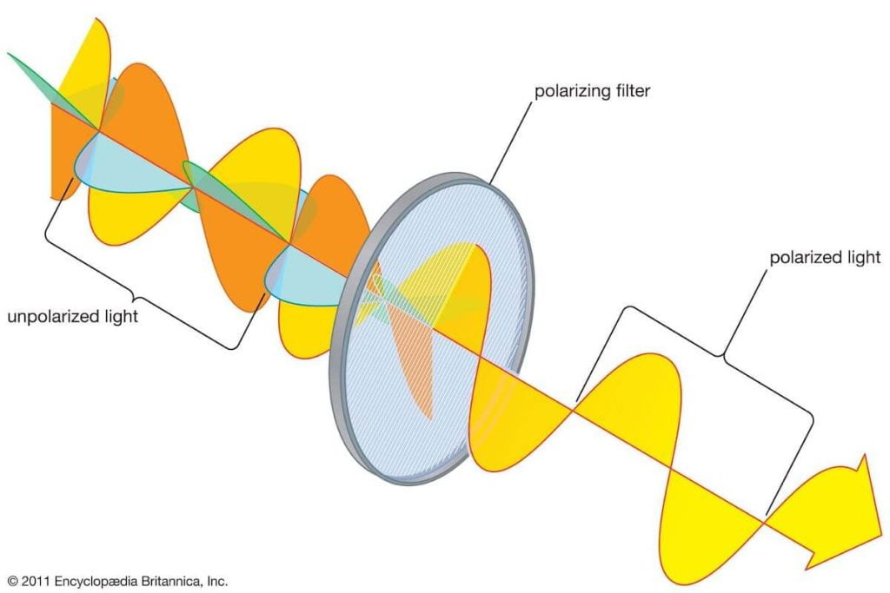
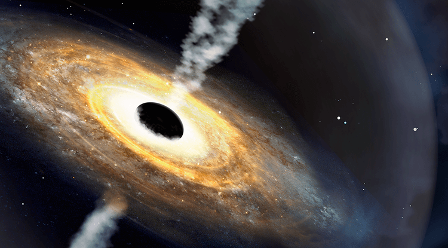
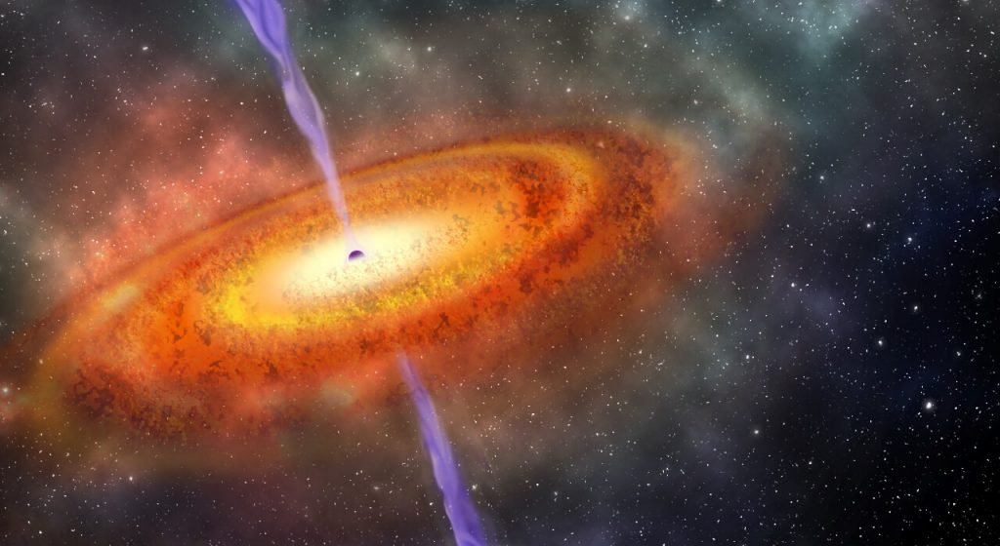

စကြာဝဠာ ထဲက အလင်းထိန် ဆုံးဆိုတဲ့ အလင်းရောင် အများအပြားဟာ ဘလက်ဟိုး တွင်းနက် တွေဆီကနေ ထွက်ပေါ်လာ ကြတာ ဖြစ်ပါတယ်။
ဒါပေမယ့် တွင်းနက်တွေ ထဲက အလင်းရောင် ထွက်လာတာတော့ မဟုတ်ပါဘူး။ ဒီ တောက်ပ ထိန်လင်းတဲ့ အလင်းရောင်ဟာ တွင်းနက်တွေရဲ့ ဝန်းကျင်ကနေ ထွက်ပေါ်လာ ကြတာ ဖြစ်ပါတယ်။
တွင်းနက်တွေဟာ ဆွဲငင်အား ကြီးမားလွန်းလို့ သူတို့ရဲ့ ပတ်ဝန်းကျင်က ဓါတ်ငွေ့တွေ၊ ဖုန်မှုန့်တွေနဲ့ ကြယ်တွေ ဂြိုဟ်တွေကို စုပ်ယူ ဖမ်းစား နိုင်ကြပါတယ်။ ဒီလို ဖမ်းယူ စားသောက် လိုက်တဲ့ အခါမှာ ဒီ ဓါတ်ငွေ့နဲ့ ဒြပ်ဝတ္ထု တွေဟာ တွင်းနက်ထဲကို ဝဲဂယက် ကြီး တစ်ခုလို အရှိန်အဟုန်နဲ့ စိးဝင် သွားကြပါတယ်။ ဒီ စီးဆင်းသွားတဲ့ ဓါတ်ငွေ့ ဝဲဂယက် ကြီးကနေပြီး တောက်ပတဲ့ အလင်းရောင်တွေ ထွက်ပေါ်လာ ကြတာ ဖြစ်ပါတယ်။

ဒီ ဘလေဇာ တွေကနေ ထွက်လာတဲ့ အလင်းတန်း ကြီးတွေရဲ့ စွမ်းအင်ဟာ ကြီးမားလွန်းလို့ စကြာဝဠာရဲ့ အလွန် ဝေးကွာတဲ့ အရပ်ဒေသ တွေအထိ ရောက်ရှိလို့ သွားနိုင် ကြပါတယ်။
အရင်က နက္ခတ် ပညာရှင် တွေဟာ ဒီ တောက်ပတဲ့ အလင်းတန်း ကြီးတွေ ဘယ်လို ဖြစ်လာလဲ ဆိုတာ စဉ်းစားလို့ မရ ခဲ့ပါဘူး။ ဒါပေမယ့် အခုတော့ အဖြေရဲ့ သလွန်စ ရပြီလို့ ပညာရှင် တွေက မျှော်လင့် ကြပါတယ်။

ဒီ ဘလက်ဟိုး တွင်းနက်တွေဟာ အနား ပတ်ဝန်းကျင်က ဓါတ်ငွေတွေနဲ့ အခြား အရာ ဝတ္ထု တွေကို ဖမ်းယူ စားသုံးနေ ကြတာပါ။ ဒီ ဓါတ်ငွေ့ နဲ့ ဒြပ်ဝတ္ထု တွေဟာ ဘလက်ဟိုးကို ရေဝဲကြီး တစ်ခုလို လှည့်ပတ် စီးဆင်းရင်းနဲ့ တွင်းနက်ထဲကို ဝင်ရောက် သွားကြတာ ဖြစ်ပါတယ်။
ဒီလို လှည့်ပတ် ဝင်ရောက် သွားတဲ့ ဒြပ်ဝတ္ထု ပစ္စည်းတွေဟာ အလွန် လျှင်မြန်တဲ့ အလျင်နဲ့ လှည့်ပတ် စီးဆင်း သွားကြတာ ဖြစ်ပါတယ်။ ဒီလို စီးဆင်းရင်း အချင်းချင်းလဲ အရှိန်အဟုန်နဲ့ ပွတ်တိုက်မိ ကြပါတယ်။
ဒီလို ပွတ်တိုက်မှုကြောင့် ဒီ ဝဲဂယက်ကြီးဟာ ပူပြင်း လာပါတယ်။ ဘယ်လောက်တောင် ပူလာလဲ ဆိုတော့ အလင်းရောင် တောက်ပ လာတဲ့ အထိ ပူပြင်းလာ ကြပါတယ်။ ဒီ အလင်းရောင်ကြောင့် အဝေးက ကြည့်ရင် ဘလက်ဟိုးကို အလင်းရောင် ကွင်းလေး အနေနဲ့ မြင်ကြရမှာ ဖြစ်ပါတယ်။

ဒီ ဒြပ်မှုန် စီးကြောင်းရဲ့ မူရင်း ဇစ်မြစ် နဲ့ ပါတ်သက်လို့တော့ ပညာရှင်တွေ သေခြား မသိကြ ပါဘူး။ ဒါပေမယ့် ဘလက်ဟိုး ထဲကို စီးဝင်သွားတဲ့ ဓါတ်ငွေ့ ဝဲဂယက် ကြီးရဲ့ အတွင်းဆုံး အလွှာက အချို့သော ဒြပ်မှုန်တွေဟာ တွင်းနက်ထဲ မဝင်ပဲ ဘလက်ဟိုးရဲ့ လျှပ်စစ်သံလိုက် စက်ကွင်းရဲ့ ဆွဲငင်မှုကြောင့် ဝင်ရိုးစွန်းကို စီးမျောပြီး အလက်ဟိုးနဲ့ဝေးရာကို ပြန်လည် မှုတ်ထုတ် ခံလိုက်ရတဲ့ ဒြပ်မှုန်တွေ ဖြစ်မယ်လို့ ယူဆ ကြပါတယ်။
ဒီ ဝင်ရိုးစွန်း ဒြပ်မှုန်စီးကြောင်း ထဲ ဝင်ရောက်သွားတဲ့ ဒြပ်မှုန်တွေဟာ အလင်းလျင်နှုန်း နီးပါး မြန်တဲ့ အလျင်နဲ့ အာကာသ ထဲကို မှုတ်ထုတ် ခံကြရတာ ဖြစ်ပါတယ်။ ဒါပေမယ့် ဘယ်လိုနည်းလမ်းနဲ့ ဒီအမှုန်တွေ အလင်းလျင်နှုန်း နီးပါ အမြန်နှုန်းကို ရောက်ရှိလာကြသလဲ ဆိုတာကိုတော့ ပညာရှင်တွေ အဖြေ ပေးနိုင်စွမ်း မရှိ ကြပါဘူး။

ဒီ IXPE X-ray တယ်လီစကုပ် ကြီးကို အတောက်ပဆုံး ဘလေဇာ တွင်းနက်ကြီး တစ်ခုဖြစ်တဲ့ မာကာရင် ၅၀၁ (Markarian 501) ဆီကို ဦးတည်ပြီး ချိန်ရွယ် ခဲ့ကြပါတယ်။ ဒီ မာကာရင် ၅၀၁ ဟာ ကမ္ဘာကနေ အလင်းနှစ် သန်း ၄၆၀ အကွာမှာ ရှိတဲ့ ဂလက်ဆီ တစ်စင်းရဲ့ ဗဟိုက မဟာတွင်းနက်ကြီး ဖြစ်ပါတယ်။
၂၀၂၂ မတ်လ အတွင်းမှာ ဒီ တွင်းနက်ရဲ့ ဝင်ရိုးတန်းက ပန်းထွက်လာတဲ့ ဒြပ်စီးကြောင်း (blazar jet) က X-ray ဓါတ်ရောင်ခြည် တွေကို ၆ ရက် တိုင်တိုင် အသေးစိတ် လေ့လာ ခဲ့ကြပါတယ်။

ဒီလို လေ့လာ ခဲ့ရာက ပညာရှင် တွေဟာ ဒီ X-ray လှိုင်းတွေရဲ့ ထူးခြားချက်ကို သတိပြုမိ ခဲ့ကြပါတယ်။ ဒါကတော့ ဒီ X-ray လှိုင်းတွေရဲ့ polarization ဟာ အလင်းလှိုင်းတွေနဲ့ နှိုင်းယှဉ်ရင် ပိုပြီး မြင့်မားတယ် ဆိုတာကို တွေ့ရှိ ခဲ့ရတာပဲ ဖြစ်ပါတယ်။
ဒါတင် မဟုတ် သေးပါဘူ၊ အလင်းလှိုင်းနဲ့ ရေဒီယိုလှိုင်း နှိုင်းယှဉ်ရင်လဲ အလင်းလှိုင်းရဲ့ polarization က ရေဒီယို လှိုင်းရဲ့ polarization ထက် ပိုမြင့်တယ် ဆိုတာကို တွေ့ရှိ ခဲ့ကြ ရပါတယ်။
(Polarization ဆိုတာက အလင်းလှိုင်းတွေ တုန်ခါတဲ့ အခါ ပြင်ညီ တစ်ခုတည်းမှာ တုန်ခါသလား၊ တစ်ခုထက် ပိုပြီး တုန်ခါသလား ဆိုတာကို ပြောတာ ဖြစ်ပါတယ်။ polarized ဖြစ်တဲ့ လှိုင်းတွေဟာ ပြင်ညီ တစ်ခုတည်းမှာ ညီညီညာညာ တုန်ခါကြပြီး polarized မဖြစ်တဲ့ လှိုင်းတွေကတော့ ဦးတည်ချက် မရှိ ပရမ်းပတာ တုန်ခါ နေကြတာကို တွေ့မြင်ကြ ရမှာ ဖြစ်ပါတယ်။ ဒါကို အောက်ပုံမှာ ရှင်းပြ ထားပါတယ်။)

ဒီလို polarization ဖြစ်တဲ့ လှိုင်း ပမာဏ ကွာခြားပေမယ့် ဒီ လှိုင်းတွေ တုန်ခါတဲ့ ပြင်ညီ ကတော X-ray၊ အလင်းနဲ့ ရေဒီယို လှိုင်းအားလုံးမှာ တူညီနေ ကြတာကို တွေ့ရှိ ကြရပါတယ်။ ဒီ အချက်ဟာ မြေပြင်မှာ ကွန်ပြူတာတွေ အသုံးပြုပြီး တွက်ချက်ထားတဲ့ simulation ရလဒ် တွေနဲ့ တူညီ နေတာကို တွေ့ရှိ ကြရပါတယ်။
ကွန်ပြူတာ simulation ရလဒ် တွေအရ ဒီလို အခြေအနေ မျိုးကို ဒြပ်မှုန် စီးကြောင်း အတွင်း ဖြစ်ပေါ်တဲ့ shock wave တွေကြောင့် ဒီ ဒြပ်မှုန်တွေရဲ့ စီးဆင်းတဲ့ အမြန်နှုန်း ပိုမို မြန် လာစေတဲ့ အခါမျိုးမှာ တွေ့မြင် ကြရမှာ ဖြစ်ပါတယ်။ ဒီ shock wave တွေ ဖြစ်ပေါ်တဲ့ နေရာနဲ့ နီးတဲ့ နေရာတွေမှာ အမြန်နှုန်း အများဆုံးနဲ့ စီးဆင်းပြီး ဝေးသွားတာနဲ့အမျှ အမြန်နှုန်းလဲ ကျဆင်း သွားမှာ ဖြစ်ပါတယ်။

စွမ်းအင် အမြင့်ဆုံး ထွက်လာတဲ့ လှိုင်းတွေက X-ray လှိုင်းတွေ ဖြစ်ပြီး သူ့ထက် စွမ်းအင် နိုမ့် သွားတဲ့ အခါမှာ အလင်းလှိုင်းတွေ ထွက်ပေါ် လာကြပါတယ်။ အနှေးဆုံး စီးဆင်းနေတဲ့ ဒြပ်မှုန်တွေ ဆီကနေတော့ စွမ်းအင် အနိုမ့်ဆုံး ဖြစ်တဲ့ ရေဒီယို လှိုင်းတွေ ထွက်ပေါ်လာ ကြပါတယ်။
ဒီလို စွမ်းအင် မြင့်တဲ့ လှိုင်းတွေရဲ့ polarization ကလဲပိုမြင့်ပြီး စွမ်းအင် နိုမ့်သွား တာနဲ့ အမျှ လှိုင်းရဲ့ polarization ကလဲ တဖြည်းဖြည်း ကျဆင်း သွားပါတယ်။

ဒီလို shock wave တွေကြောင့် ဒီ ဒြပ်မှုန် စီးကြောင်း ကြီးရဲ့ အရှိန်ကို ပိုမို မြန်ဆန် လာစေပြီး အလင်းလျှင် နှုန်းထိ နီးပါး အလျင်အထိ မြန်ဆန် လာစေတာ ဖြစ်မယ်လို့ ပညာရှင် တွေက ယူဆ ကြပါတယ်။ ဒါ့ကြောင့်မို့လဲ ဒီ စီးကြောင်း ကြီးကနေ စကြာဝဠာ အတွင်း အတောက်ပဆုံး အလင်းတန်းကြီး အဖြစ် အလင်းရောင် နဲ့ X-ray ရောင်ခြည်တွေ ထွက်ပေါ် လာရတာပဲ ဖြစ်ပါတယ်။
ဒီ Shock Wave တွေ ဘယ်လို ထွက်ပေါ်လာ သလဲ ဆိုတာနဲ့ ပတ်သက်လို့ အတိအကျ သိရဖို့ အတွက်ကတော့ နောက်ထပ် အသေးစိတ် လေ့လာမှုတွေ ပြုလုပ်သွားဖို့ လိုအပ်နေမှာ ဖြစ်ပါတယ်။
Ref: We Finally Know How Black Holes Produce The Most Brilliant Light in The Universe | Science Alert